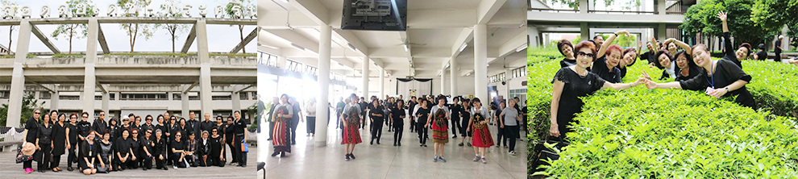

| ภาควิชาการพยาบาลรากฐานได้จัดตั้งโครงการส่งเสริมสุขภาพผู้สูงอายุ ซึ่งเป็นศูนย์สุขภาพดีสำหรับผู้สูงอายุ โดยมีวัตถุประสงค์เพื่อให้ผู้สูงอายุมีความรู้ในการดูแลตนเอง ลดภาวะพึ่งพา เพื่อนำไปสู่คุณภาพชีวิตที่ดีทั้งด้านร่างกายและจิตสังคม นอกจากนี้ภาควิชาฯ ได้วางแผนจัดตั้งศูนย์ความเป็นเลิศด้านการพยาบาลผู้สูงอายุ โดยมีวัตถุประสงค์เพื่อพัฒนาคุณภาพชีวิตของผู้สูงอายุและครอบครัว กิจกรรมประกอบด้วยการให้ความรู้เกี่ยวกับการดูแลรวมทั้งการวิจัยด้านผู้สูงอายุ ตลอดจนเป็นแหล่งเรียนรู้ด้านการศึกษาสำหรับนักศึกษาพยาบาล พยาบาล และประชาชนในชุมชม เพื่อให้บริการด้านสุขภาพแก่ผู้สูงอายุ ครอบครัวและส่งเสริมคุณค่าทางวัฒนธรรมแก่สังคม
ศูนย์ความเป็นเลิศด้านการพยาบาลผู้สูงอายุ
เกี่ยวกับศูนย์
ภาควิชาการพยาบาลรากฐานได้มุ่งเน้นในด้านการดูแลผู้สูงอายุมาตั้งแต่ปี พ.ศ. 2525 ทั้งด้านการศึกษา การบริการวิชาการ และการวิจัย โดยกลุ่มเป้าหมายที่สำคัญได้แก่ ผู้สูงอายุ ซึ่งมีแนวโน้มที่จะสูงขึ้นเรื่อยๆ นับตั้งแต่ปี 2548 เป็นต้นมา ประเทศไทยได้ก้าวเข้าสู่ประเทศประชากรผู้สูงอายุ ดังนั้นภาควิชาฯ ได้จัดตั้งโครงการส่งเสริมสุขภาพผู้สูงอายุ ซึ่งเป็นศูนย์สุขภาพดีสำหรับผู้สูงอายุ ตั้งแต่ปี 2531 โดยมีวัตถุประสงค์เพื่อให้ผู้สูงอายุมีความรู้ในการดูแลตนเอง เพื่อนำไปสู่คุณภาพชีวิตที่ดีทั้งด้านร่างกายและจิตสังคม และต่อมาได้ดำเนินการโครงการ การพัฒนาศักยภาพและคุณภาพชีวิตผู้สูงอายุ ซึ่งกลุ่มเป้าหมายได้แก่ ประชากรผู้สูงอายุ ผู้ดูแล บุคลากรด้านสุขภาพ และประชากรที่อยู่ในชุมชน โดยกิจกรรมของศูนย์ประกอบด้วยกิจกรรมหลากหลายชนิดได้แก่ การให้ความรู้ด้านสุขภาพ การให้คำปรึกษาปัญหาสุขภาพ การประเมินภาวะสุขภาพ การคัดกรองโรค การฝึกอบรม เป็นต้น ซึ่งการดำเนินงานของศูนย์ ภายใต้การดำเนินงานของคณาจารย์ภาควิชาการพยาบาลรากฐาน มีการประสานงานและสร้างเครือข่ายกับหน่วยงานต่างๆ และชุมชน เพื่อมุ่งหวังให้กิจกรรมดำเนินไปอย่างมีประสิทธิภาพและยั่งยืน เช่น ศูนย์บริการสาธารณสุขกรุงเทพมหานคร สาธารณสุขจังหวัด ชมรมผู้สูงอายุ นอกจากนี้ ยังเป็นแหล่งศึกษาวิจัยด้านผู้สูงอายุเพื่อพัฒนาองค์ความรู้มาใช้ในการเรียนการสอน และการดูแลผู้สูงอายุต่อไป

วัตถุประสงค์
- เป็นแหล่งฝึกปฏิบัติและศูนย์กลาง การแลกเปลี่ยนเรียนรู้ของคณาจารย์ และนักศึกษาพยาบาล ด้านการเรียนการสอน การวิจัยและและพัฒนาองค์ความรู้ด้านผู้สูงอายุ
- เผยแพร่ความรู้และสร้างเครือข่าย ด้านการดูแลผู้สูงอายุ แก่พยาบาลชุมชน/ เจ้าหน้าที่สาธารณสุข ผู้นำ/อาสาสมัครชุมชน และครอบครัว
- ให้บริการดูแลสุขภาพองค์รวมแก่ผู้สูงอายุ ที่มีภาวะสุขภาพดีและเจ็บป่วยรวมทั้ง ครอบครัวผู้ดูแล
การดำเนินการในอนาคต
กิจกรรมที่กำลังดำเนินการ
- พัฒนารูปแบบกิจกรรมการสร้างเสริมสุขภาพสำหรับผู้สูงอายุ
- การให้คำปรึกษาปัญหาสุขภาพแก่ผู้สูงอายุและครอบครัวโดย สอนสาธิตการดูแลและจัดกลุ่มสนับสนุน(group support) แก่ญาติผู้ดูแลรวมทั้งมีการเยี่ยมบ้าน
- จัดกิจกรรมอาสาสมัครผู้สูงอายุ “ กิจกรรมเพื่อนช่วยเพื่อน ใจถึงใจ”
- จัดอบรมให้ความรู้แก่บุคลากรด้านสาธารณสุข ผู้สูงอายุ และผู้ดูแลรวมทั้ง สร้างเครือข่ายด้านการดูแลผู้สูงอายุแก่พยาบาลชุมชน /เจ้าหน้าที่สาธารณสุข ผู้นำ/อาสาสมัครชุมชน และครอบครัว
- เป็นแหล่งข้อมูลวิจัยด้านผู้สูงอายุและแหล่งฝึกปฏิบัติ ของนักศึกษาพยาบาล
- จัดทำเอกสารด้านผู้สูงอายุ แผ่นพับ/คู่มือการดูแลตนเองสำหรับผู้สูงอายุ
กิจกรรมที่จะดำเนินการในอนาคต
- จัดอบรมด้านผู้ดูแลผู้สูงอายุ
- พัฒนาฐานข้อมูลการวิจัยด้านผู้สูงอายุ
- พัฒนาเครื่องมือวิจัยด้านการดูแลผู้สูงอายุ
- สร้างเครือข่ายนักวิจัยด้านการดูแลผู้สูงอายุทั้งในและนอกสถาบัน
- จัดตั้งศูนย์ดูแลผู้สูงอายุกลางวัน
การบริการทางการศึกษา
- การจัดอบรมสัมมนา “การดูแลสุขภาพตนเองวัยเกษียณอายุการทำงาน”
เป็นโครงการอบรมประมาณ 3 วัน แก่บุคลากรทั้งภาครัฐ และภาคเอกชนที่มีอายุการทำงานใกล้เกษียณอายุ
ราชการ เพื่อให้มีความรู้ในการดูแลตนเองอย่างถูกต้องเหมาะสม กฎหมายและสวัสดิการรัฐที่ผู้สูงอายุควรทราบ และการใช้ชีวิตในวัยเกษียณอายุ
- การเป็นวิทยากรพิเศษ
คณาจารย์ภาควิชาการพยาบาลรากฐาน ได้รับทุนและการยอมรับในสาขาการพยาบาลผู้สูงอายุ โดยได้รับ
เชิญเป็นวิทยากรพิเศษในหัวข้อต่างๆ เกี่ยวกับผู้สูงอายุทั้งในมหาวิทยาลัยต่างๆ องค์กรเอกชนและภาครัฐต่างๆ การประชุมสัมมนาวิชาการ และการศึกษาวิจัย เพื่อแลกเปลี่ยนองค์ความรู้และประสบการณ์ เพื่อนำไปสู่การพัฒนาคุณภาพของการพยาบาลผู้สูงอายุ
การบริการวิชาการ
- Health Promotion Program for the Elderly
เปิดให้บริการสัปดาห์ละ 3 วัน ตั้งแต่เวลา 8.00 – 12.00 น.
จุดประสงค์เพื่อเป็นศูนย์รวมของผู้สูงอายุให้มีโอกาสมาพูดคุย แลกเปลี่ยนเรียนรู้ประสบการณ์ และได้ร่วม กิจกรรมหลากหลาย เช่น ได้รับความรู้เกี่ยวกับการดูแลตนเองเพื่อให้มีภาวะสุขภาพกายและจิตสังคมที่ดี
กิจกรรมการออกกำลังกายหลายรูปแบบ และกิจกรรมนันทนาการ ซึ่งเหมาะกับผู้สูงอายุ รวมทั้งมีการพัฒนาศักยภาพการเป็นผู้นำของผู้สูงอายุ เพื่อเป็นผู้นำด้านการสร้างเสริมสุขภาพแก่ชมรมผู้สูงอายุต่างๆ และในชุมชนต่อไป นอกจากนี้ ยังเป็นแหล่งฝึกภาคปฏิบัติของนักศึกษาพยาบาลหลักสูตรต่างๆ และแหล่งศึกษาดูงาน
- โครงการพัฒนาศักยภาพและคุณภาพชีวิตผู้สูงอายุ โครงการนี้ประกอบด้วยกิจกรรมย่อย 3 โครงการ ได้แก่
- โครงการพัฒนาศักยภาพและสร้างเครือข่ายในการดูและผู้สูงอายุ กลุ่มเป้าหมายหลัก ได้แก่ พยาบาล เจ้าหน้าที่สาธารณสุข อาสามสมัครหมู่บ้าน และผู้นำชุมชน
กิจกรรมประกอบด้วย การประชุมอบรมวิชาการ การเสวนากลุ่ม การสอนสาธิต การแลกเปลี่ยนเรียนรู้โดยใช้กระบวนการการจัดการความรู้ เพื่อให้กลุ่มเป้าหมายมีความรู้และทักษะในการดูแลผู้สูงอายุในชุมชน รวมทั้งเป็นศูนย์กลางในการประสานงาน และสร้างเครือข่ายในการดูแลผู้สูงอายุอย่างต่อเนื่อง
- โครงการ การพัฒนาศักยภาพการดูแลตนเองของผู้สูงอายุ ที่เป็นโรคเรื้อรัง และผู้ดูแล กลุ่มเป้าหมายหลัก ได้แก่ ผู้สูงอายุ และผู้ดูแลในครอบครัว ผู้สูงอายุส่วนใหญ่มักมีโรคประจำตัวซึ่งเป็นโรคเรื้อรัง ทำให้นำไปสู่ภาวะทุพพลภาพได้ การดำเนินของโครงการนี้ ในเบื้องต้นเน้นการดูแลตนเองของผู้สูงอายุโรคเบาหวาน และการปฏิบัติตนอย่างถูกต้องเหมาะสมแก่ผู้สูงอายุ และผู้ดูแล มีการสอนสาธิต และทำกิจกรรมกลุ่มเพื่อพัฒนารูปแบบการปรับเปลี่ยนพฤติกรรมในผู้สูงอายุโรคเบาหวาน และสร้างเครือข่ายกับผู้นำและผู้สูงอายุในชุมชน
- โครงการเพื่อนช่วยเพื่อน ใจถึงใจ กลุ่มเป้าหมายหลัก ได้แก่ ผู้สูงอายุ โครงการนี้เป็นโครงการสร้างผู้นำในการดูแลสุขภาพ เพื่อให้
ผู้สูงอายุได้ดูแลผู้สูงอายุที่มีความสามารถในการดูแลตนเองลดลง หรือเป็นโรคเรื้อรังที่ต้องอยู่กับบ้าน โดยให้การพยาบาลเบื้องต้นอย่างง่ายๆ มีการเยี่ยมเยียนที่บ้าน เพื่อประเมินภาวะสุขภาพของผู้สูงอายุและส่งเสริมสุขภาพจิต กิจกรรมประกอบด้วย มีการรับสมัครอาสาสมัครผู้สูงอายุ การอบรมให้ความรู้ และการไปเยี่ยมเยียนผู้สูงอายุที่บ้าน
|

 EN
EN